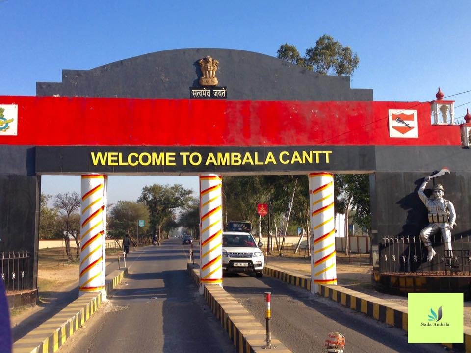
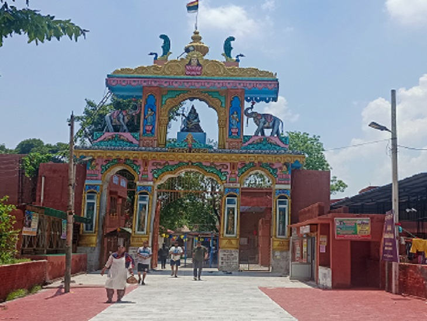
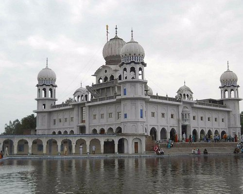
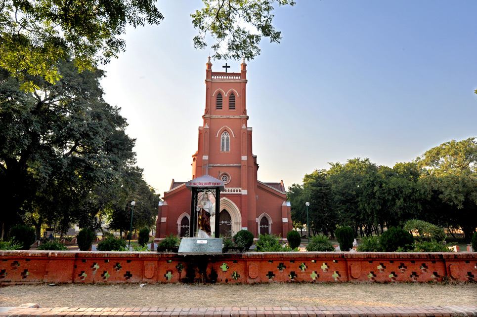
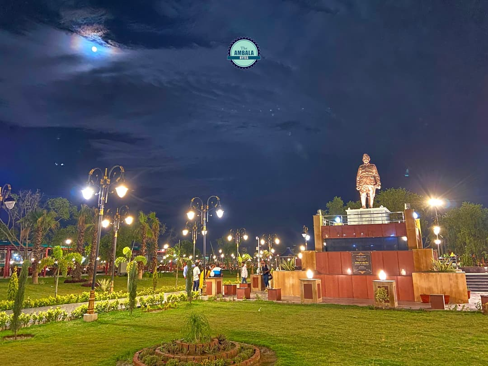
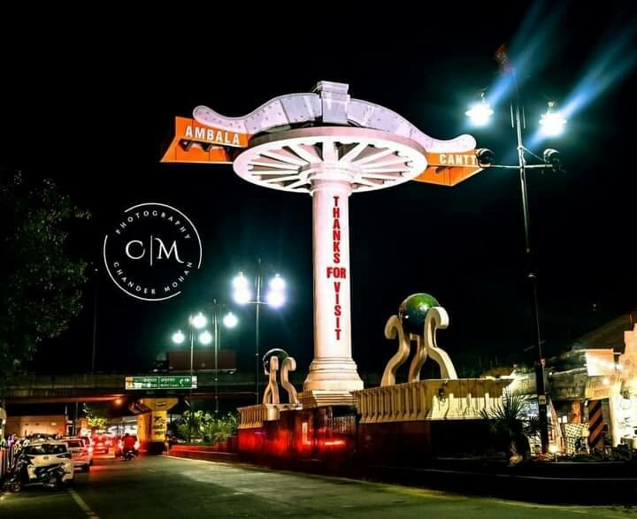
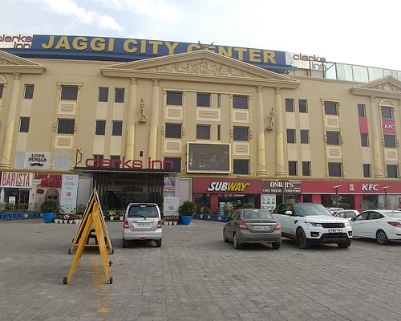

Personal Connection
As a proud native of Ambala, I'm deeply connected to the city's history, culture, and people. My experiences growing up in Ambala have taught me valuable lessons about community, hard work, and the importance of staying true to one's roots. The city's resilience and determination in the face of challenges have inspired me to pursue my passions and overcome obstacles. Ambala's influence on my life has been profound, shaping my values, interests, and goals.

Ambala Cantonment
Specific Landmarks
Some of my favorite childhood memories are of visiting the Shiva Mandir, Panjokhra Sahib Gurudwara, and the Holy Redemeer Church , which showcase the city's rich cultural diversity. Netaji Subhash Chandra Bose Park, with its lush greenery and serene atmosphere, has been a heaven for relaxation and recreation. Ambala is famous for its airbase and is one of the most important in northern India. Other notable features are the fact that that Ambala Cantt is also known as the Science City and the Jaggi City Centre located in the heart of the city. These landmarks have not only provided a sense of community but also inspired my curiosity and creativity.






Conclusion
In conclusion, Ambala is more than just my birthplace; it's a city that has shaped my identity, values, and aspirations. I'm grateful for the experiences, lessons, and memories that I've accumulated growing up in this vibrant city. As I continue to grow and evolve, I remain connected to my roots and proud of my Ambala heritage.